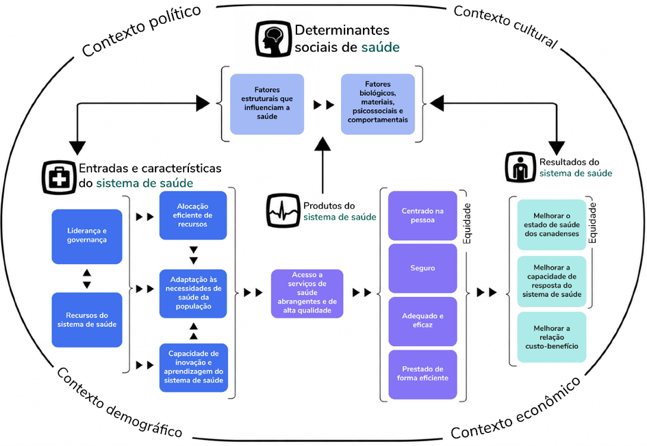
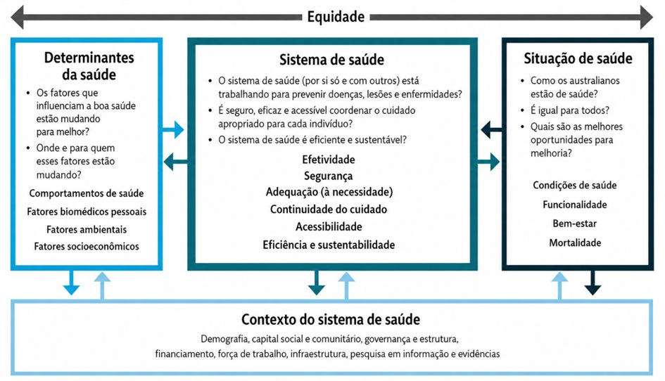
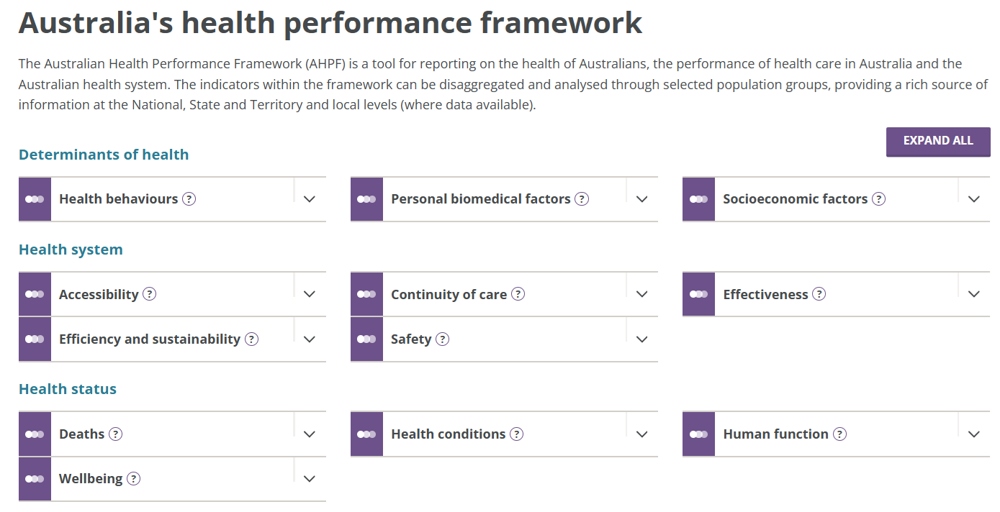
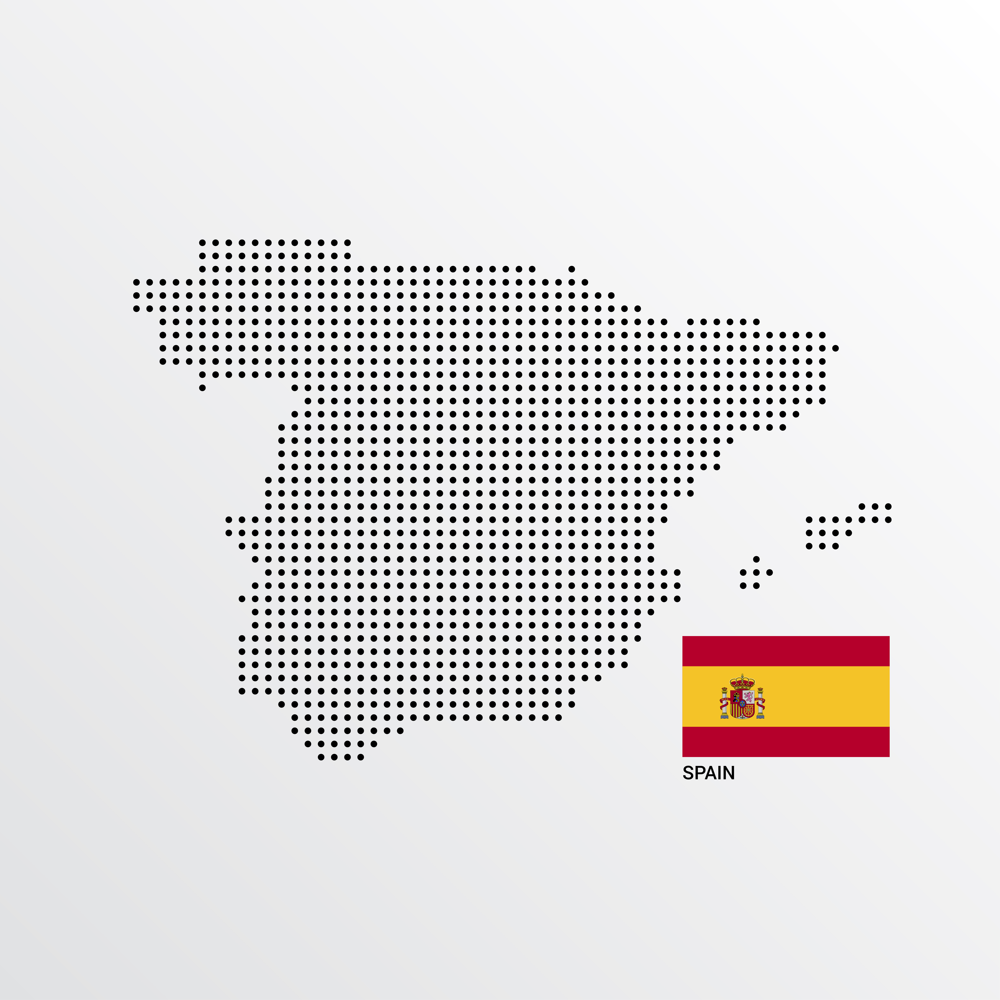

Módulo 1 | Aula 2
Iniciativas para
avaliação de desempenho de sistemas de saúde
Modelos internacionais para avaliação de desempenho de sistemas de saúde
Agora vamos conhecer iniciativas de alguns países desenhadas para avaliar o desempenho dos sistemas de saúde. Os sistemas de saúde do Canadá, Reino Unido, Austrália e Espanha têm em comum com o sistema de saúde brasileiro a lógica de que o acesso aos cuidados de saúde é um direito da população e deve ser garantido principalmente por financiamento público, diferentemente de sistemas mais dependentes de seguros privados.
Canadá
O modelo canadense de avaliação de desempenho, desenvolvido pelo Instituto Canadense de Informação sobre Saúde (Canadian Institute for Health Information - CIHI), foi lançado em 1999. É a principal referência internacional utilizada para a construção da matriz conceitual do Proadess no Brasil, que veremos na próxima aula.
Este modelo fundamenta-se na perspectiva teórica de Evans e Stoddart (1990) sobre a produção social da saúde e tem como marco histórico o Relatório Lalonde (1974), que definiu a saúde como resultado de quatro grupos de determinantes:
Os principais componentes e características do modelo canadense incluíram:
- Abordagem em "Painel de Controle" (Dashboard): O sistema é estruturado para permitir a visualização e avaliação simultânea de múltiplas dimensões do desempenho.
-
Abordagem em "Painel de Controle" (Dashboard): O sistema é estruturado para
permitir a visualização e avaliação simultânea de múltiplas dimensões do
desempenho.
- Estado de Saúde: Avalia as condições de saúde propriamente ditas, estado funcional, bem-estar e mortalidade da população.
- Determinantes não médicos da saúde: Foca em comportamentos individuais, condições de vida e de trabalho, recursos pessoais (como suporte social e estresse) e fatores ambientais.
- Desempenho dos serviços de saúde: Compreende oito subdimensões: aceitabilidade, acessibilidade, adequação, competência, continuidade, efetividade, eficiência e segurança.
- Características da comunidade e do sistema: Inclui informações contextuais, geração de recursos e perfis populacionais e do próprio sistema de saúde.
- Equidade como eixo transversal: A equidade é considerada uma dimensão que deve atravessar todas as outras, orientando a análise de indicadores para identificar desigualdades injustas.
Embora esse modelo tenha sido reconhecido internacionalmente, foi considerado que eram necessários ajustes para que ele fosse mais dinâmico, e para que refletisse o desenvolvimento científico subsequente, e a crescente importância dada pelos governos na relação custo-benefício, segurança do paciente e centralidade no paciente (CIHI, 2013).
Assim, em 2013, o CIHI publicou um novo quadro conceitual denominado CIHI Health System Performance Framework, baseado na estrutura de 1999. Essa nova proposta partiu de uma revisão tanto de outras propostas internacionais quanto da literatura e de evidências sobre a melhoria da qualidade organizacional e do sistema de saúde.
No novo modelo conceitual, o desempenho do sistema de saúde é medido através de quatro pilares (ou quadrantes) inter-relacionados:
- Resultados do sistema de saúde (Health system outcomes): Representam os objetivos finais do sistema, incluindo as situações de saúde dos canadenses, a responsividade do sistema, a equidade e o custo-benefício (eficiência econômica).
- Determinantes sociais da saúde (Social determinants of health): Englobam fatores estruturais (como posição socioeconômica, renda e educação) e fatores intermediários (características biológicas, psicossociais e comportamentais) que influenciam a saúde da população.
- Produtos do sistema de saúde (Health system outputs): Referem-se aos serviços de saúde prestados. Este pilar foca na acessibilidade e na qualidade dos serviços, que devem ser centrados no paciente, seguros, adequados e efetivos e eficientemente prestados.
- Insumos e características do sistema de saúde (Health system inputs and characteristics): Referem-se aos recursos fundamentais, como liderança, governança, recursos financeiros e humanos, equipamentos e a capacidade de inovação e aprendizado do sistema.
Esses quatro pilares operam dentro de contextos demográficos, políticos, econômicos e culturais, que influenciam tanto cada pilar quanto a maneira como eles interagem entre si. O modelo é dinâmico e focado na melhoria contínua, descrevendo relações causais onde os insumos e processos levam, em última análise, a melhores resultados de saúde.
CIHI Health System Performance Framework – proposta canadense para avaliação do desempenho do sistema de saúde

Para saber mais sobre o modelo canadense, leia esse artigo.
Reino Unido
A avaliação de desempenho do Sistema Nacional de Saúde (NHS) do Reino Unido passou por uma evolução significativa, deslocando o foco das atividades e da eficiência pura, comuns na década de 1980, para a qualidade e os resultados da atenção a partir de reformas iniciadas em 1997 ("The New NHS") e 2000 ("The NHS Plan").
O Marco de Avaliação de Desempenho - Performance Assessment Framework (PAF), estabelecido entre 1997 e 2001, organizou a avaliação em seis dimensões fundamentais:
Reflete o objetivo de melhorar o status de saúde geral da população e reduzir desigualdades.
Define o grau em que o sistema oferece serviços baseados nas necessidades das pessoas, independentemente de fatores geográficos, socioeconômicos, étnicos ou etários.
Foca na provisão de serviços que sejam efetivos, oportunos e baseados em padrões acordados.
Busca assegurar que o cuidado seja prestado com o mínimo de desperdício, otimizando o uso dos recursos para alcançar o máximo de benefícios ("valor pelo dinheiro").
Avalia se o sistema é sensível às necessidades individuais e como os usuários percebem a qualidade do cuidado.
Mede a contribuição direta das intervenções e serviços de saúde para a melhoria efetiva da saúde da população.
Este quadro de referência foi adotado para substituir modelos anteriores que focavam excessivamente apenas em atividades e custos, passando a privilegiar a qualidade e os resultados da atenção por meio de um sistema de gestão baseado no conceito de balanced scorecard.
Austrália
Outra iniciativa relevante para a discussão sobre modelos de desempenho dos sistemas de saúde é o Australian Health Performance Framework - AHPF (NHIPPC, 2017), disponibilizado pelo Australian Institute of Health and Welfare do governo australiano. Assim como o modelo canadense de 1999, esse modelo se organiza em quatro grandes dimensões e tem a equidade como eixo transversal
Figura – Modelo australiano de avaliação do desempenho do sistema de saúde

The Australian Health Performance Framework.
Essa proposta também apresenta um formato de dashboard - um painel apresenta diversos indicadores que podem ser desagregados por grupos populacionais definidos em nível nacional, estadual, territorial e local, conforme a disponibilidade das fontes de dados utilizadas. As dimensões e respectivas subdimensões para avaliação do desempenho do sistema de saúde são:
- Determinantes da Saúde (comportamentos de saúde; fatores biomédicos pessoais; e fatores socioeconômicos);
- Sistema de saúde (acessibilidade; continuidade do cuidado; efetividade; eficiência e sustentabilidade; e segurança do paciente);
- Estado de saúde (condições de saúde; funcionalidade; bem-estar e mortalidade).

The Australian Health Performance Framework.
Conheça o painel australiano em Australia's health performance framework - "Australia's health performance framework - Australian Institute of Health and Welfare"

Espanha
Em 2007, o Sistema Nacional de Saúde espanhol aprovou o primeiro modelo dos Indicadores-chave do Sistema Nacional de Saúde (Indicadores Clave del Sistema Nacional de Salud - INCLASNS), com uma listagem prioritária de 110 indicadores selecionados por consenso técnico para oferecer informações comparáveis sobre o nível de saúde e a atenção sanitária no país.
Depois disso, os antecedentes revelam um sistema dinâmico que evoluiu para monitorar a universalidade, qualidade e equidade dos serviços de saúde na Espanha. Confira, na linha do tempo abaixo, os principais marcos do desenvolvimento desse modelo:
2016
Modelo (Baseado no ECHI): Uma revisão significativa expandiu a lista para 248 indicadores, sendo 50 classificados como "essenciais" (lista curta). Este modelo foi fundamentado no marco conceitual europeu ECHI (European Core Health Indicators), adaptado às características e sistemas de informação espanhóis.
2019 e 2020
Este processo buscou corrigir lacunas identificadas na versão anterior, como a baixa representação da saúde mental, dos fatores ambientais e da atenção nas etapas finais da vida. Além disso, incorporou dados de sistemas de informação nacionais consolidados. Como resultado dessa revisão e após uma transição estrutural, o modelo foi otimizado, passando de 18 domínios para 12 domínios, e de 248 indicadores para 184 indicadores-chave (dos quais 69 eram essenciais).
2025
A versão mais recente mantém a estrutura de 12 domínios, mas elevou o número total para 186 indicadores-chave (70 essenciais). A principal mudança nesta etapa foi a inclusão de informações desagregadas por nível socioeconômico (renda, educação e classe social), seguindo recomendações de órgãos internacionais como a OMS, OCDE e Eurostat para promover a equidade em saúde.
pan_tool_alt Clique Toque em cada dimensão e seus respectivos domínios para saber mais:
Modelo conceitual espanhol
Conheça o painel de indicadores da Espanha construído a partir desse modelo conceitual.
Operacionalização da Equidade
Apesar de ser considerada uma dimensão transversal essencial, a equidade é uma das áreas com menor progresso prático. Os desafios incluem:
- A complexidade de formular e operacionalizar o conceito para que ele reflita diferenças que são não apenas evitáveis, mas também injustas.
- A necessidade de dados confiáveis e com periodicidade definida para distinguir o desempenho entre diferentes grupos populacionais.
Na próxima aula, veremos um modelo pensado para o sistema de saúde brasileiro – o Projeto de Avaliação de Desempenho do Sistema de Saúde (Proadess).